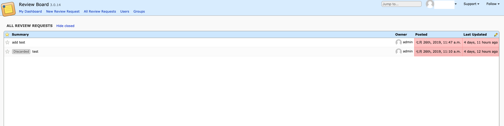

ReviewBoard简介
ReviewBoard是个开源的、可扩展的、友好的基于Web的代码评审工具，是用Python框架Django开发的。
ReviewBoard的官方网站：https://www.reviewboard.org，其title为： Take the pain out of code review | Review Board
Take the pain out of code review 可以翻译为：从代码评审的痛苦中解脱出来
ReviewBoard的源码托管在GitHub上： https://github.com/reviewboard/reviewboard
ReviewBoard的源码也是通过ReviewBoard来进行评审的： https://reviews.reviewboard.org/
ReviewBoard的DEMO： http://demo.reviewboard.org/，可以通过DEMO简单体验下ReviewBoard的基本使用
ReviewBoard官方指南
要了解ReviewBoard，最好的方式莫过于阅读官方指南： https://www.reviewboard.org/docs/，ReviewBoard的官方指南有：
User Guide（用户指南）， Administration Guide（管理员指南），Web API Guide（Web API指南），Extending Review Board（扩展ReviewBoard）和 Frequently Asked Questions（常见问答FAQ）。
用户指南的提纲：开始（包括代码评审的介绍、一般工作流、账户设置）、使用评审请求（评审请求的创建、修改、发布、关闭等）、评审、搜索、使用MarkDown。
管理员指南的提纲：安装、升级、优化、管理员UI、配置、扩展和站点管理。
Web API是RESTful架构，使得ReviewBoard可以用各种编程语言来集成。
使用ReviewBoard进行代码评审
代码评审（CodeReview）一般有两种形式：pre-commit-review，post-commit-review。
pre-commit-review是指代码提交到代码库前进行代码评审；
post-commit-review是指代码提交到代码库后进行代码评审。
ReviewBoard同时支持以上两种形式，代码的评审主要通过ReviewRequest（评审请求）来进行的。
其中pre-commit-review的工作流为：
- 在代码修改后，提交人创建代码评审请求
- 相应的评审人通过评审请求对代码进行评审，如果评审不通过，提交人可以更新该评审请求
- 评审通过之后，提交人将代码提交至版比库
- 当然，笔者始终认为代码评审的最好方式是提交前评审，这样能够很好的保证提交到版本库的代码都是经过评审的。
Docker安装ReviewBoard
官方文档
- ReviewBoard官网上docker-reviewboard页面：
https://www.reviewboard.org/store/products/docker-reviewboard/ - GitHub上docker-reviewboard的源码：
https://github.com/ikatson/docker-reviewboard/ - DockerHub上reviewboard的镜像：
https://registry.hub.docker.com/u/ikatson/reviewboard/
安装步骤
1 | # Install postgres |
访问ReviewBoard页面

安装reviewboard-svn-hooks
- 下载地址：http://pypi.python.org/pypi/reviewboard-svn-hooks
- 解压并进入解压后的目录进行安装：
setup.py.install``` 1
- 修改配置文件：```vi /etc/reviewboard-svn-hooks/conf.ini
1 | [common] |
SVN hooks配置
- 进入svn仓库的hooks目录，将pre-commit.tmpl更名为pre-commit，编辑pre-commit文件，删除所有内容，修改如下：
1 | /home/svn/soft_2018/hooks # ls |
客户端安装rbtools工具
- 安装：
install RBTools``` 1
- 使用rbt命令前，需要在项目目录下新建一个配置文件.reviewboardrc，并进行配置：
REVIEWBOARD_URL=”http://reivewboard_ip:8000"
REPOSITORY = “soft_2018”
REPOSITORY_TYPE = “svn”
1 | - 执行rbt post 提交，在reviewboard平台上查看： |
- 3：每个review的id只能使用一次，第二次使用则会出现如下错误：
is already used.``` 1
2
- 4：提交时遇到如下错误：
“Permission denied”`
，解决方案：跟“/etc/reviewboard-svn-hooks”目录要有权限，加上权限重新提交后解决。